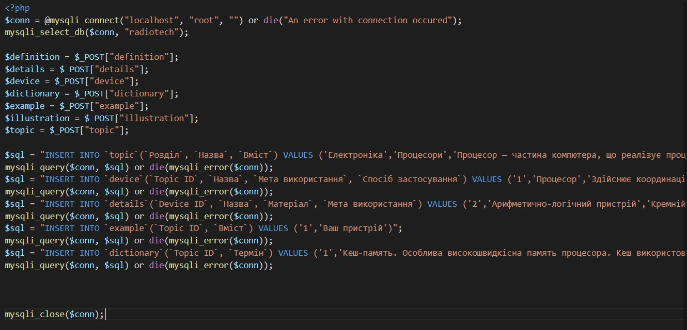
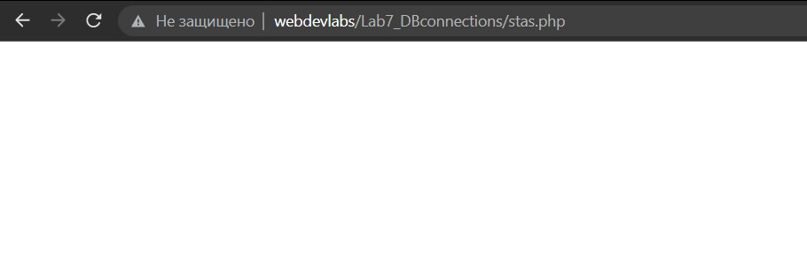
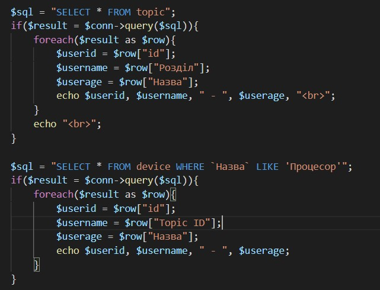
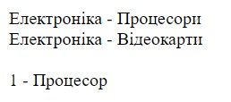

Варіант-7. Предметна область - "Довідник з радіотехніки"

Введення даних в БД використовуючи команди INSERT INTO

Як видно на скріншоті, на екран не було виведено жодного повідомлення про помилку, отже наш код відпрацював нормально, все було додано до БД.

Виведення даних з БД використовуючи команди SELECT, FROM, WHERE

Виведена на екран інформація з БД.